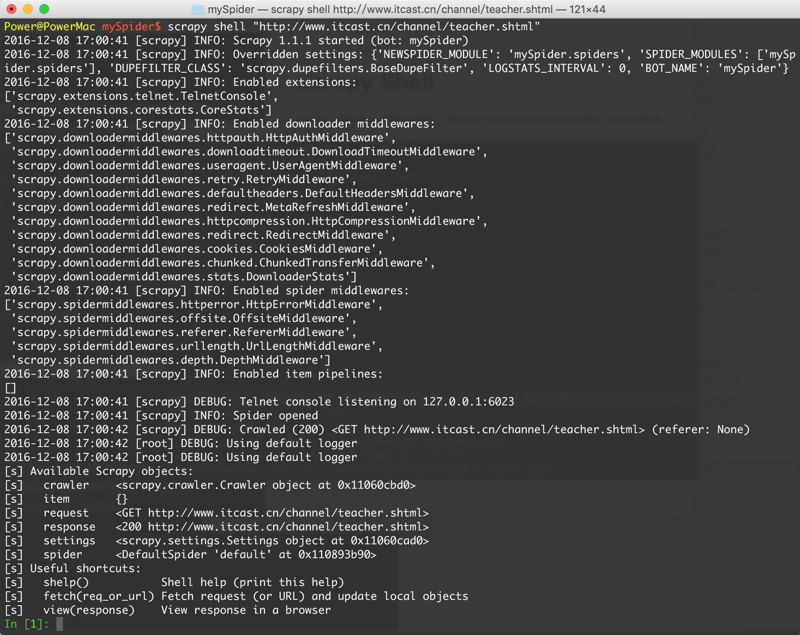

Scrapy Shell
Scrapy终端是一个交互终端，我们可以在未启动spider的情况下尝试及调试代码，也可以用来测试XPath或CSS表达式，查看他们的工作方式，方便我们爬取的网页中提取的数据。
如果安装了 IPython ，Scrapy终端将使用 IPython (替代标准Python终端)。 IPython 终端与其他相比更为强大，提供智能的自动补全，高亮输出，及其他特性。（推荐安装IPython）
启动Scrapy Shell
进入项目的根目录，执行下列命令来启动shell:
scrapy shell "http://www.itcast.cn/channel/teacher.shtml"

Scrapy Shell根据下载的页面会自动创建一些方便使用的对象，例如 Response 对象，以及 Selector 对象 (对HTML及XML内容)。
当shell载入后，将得到一个包含response数据的本地 response 变量，输入
response.body将输出response的包体，输出response.headers可以看到response的包头。输入
response.selector时， 将获取到一个response 初始化的类 Selector 的对象，此时可以通过使用response.selector.xpath()或response.selector.css()来对 response 进行查询。Scrapy也提供了一些快捷方式, 例如
response.xpath()或response.css()同样可以生效（如之前的案例）。
Selectors选择器
Scrapy Selectors 内置 XPath 和 CSS Selector 表达式机制
Selector有四个基本的方法，最常用的还是xpath:
- xpath(): 传入xpath表达式，返回该表达式所对应的所有节点的selector list列表
- extract(): 序列化该节点为字符串并返回list
- css(): 传入CSS表达式，返回该表达式所对应的所有节点的selector list列表，语法同 BeautifulSoup4
- re(): 根据传入的正则表达式对数据进行提取，返回字符串list列表
XPath表达式的例子及对应的含义:
/html/head/title: 选择<HTML>文档中 <head> 标签内的 <title> 元素
/html/head/title/text(): 选择上面提到的 <title> 元素的文字
//td: 选择所有的 <td> 元素
//div[@class="mine"]: 选择所有具有 class="mine" 属性的 div 元素
尝试Selector
我们用腾讯社招的网站http://hr.tencent.com/position.php?&start=0#a举例：
# 启动
scrapy shell "http://hr.tencent.com/position.php?&start=0#a"
# 返回 xpath选择器对象列表
response.xpath('//title')
[<Selector xpath='//title' data='<title>职位搜索 | 社会招聘 | Tencent 腾讯招聘</title'>]
# 使用 extract()方法返回字符串列表
response.xpath('//title').extract()
['<title>职位搜索 | 社会招聘 | Tencent 腾讯招聘</title>']
# 打印列表第一个元素,没有则返回None
print response.xpath('//title').extract_first()
<title>职位搜索 | 社会招聘 | Tencent 腾讯招聘</title>
#contains的用法，or的用法，last()的含义
In [6]: response.xpath('//*[contains(@class,"odd") or contains(@class,"even")]/td[last()]/text()').extract()
Out[6]:
['2017-06-02',
'2017-06-02',
'2017-06-02',
'2017-06-02',
'2017-06-02',
'2017-06-02',
'2017-06-02',
'2017-06-02',
'2017-06-02',
'2017-06-02']
In [4]: response.xpath('//a[contains(@href,"position_detail.php?")]/text()').extract()
Out[4]:
['19407-移动游戏平台合作（上海）',
'19407-手游商业化与本地化策划（上海）',
'OMG236-腾讯视频平台高级产品经理（深圳）',
'OMG096-科技频道记者（北京）',
'18402-项目管理',
'IEG-招聘经理（深圳）',
'OMG097-视觉设计师（北京）',
'OMG097-策略产品经理/产品运营（北京）',
'OMG097-策略产品经理/产品运营（北京）',
'OMG097-数据产品经理(北京）']
In [5]: response.xpath('//*[contains(@class,"odd") or contains(@class,"even")]/td[last()-1]/text()').extract()
Out[5]: ['上海', '上海', '深圳', '北京', '深圳', '深圳', '北京', '北京', '北京', '北京']
以后做数据提取的时候，可以把现在Scrapy Shell中测试，测试通过后再应用到代码中。
当然Scrapy Shell作用不仅仅如此，但是不属于我们课程重点，不做详细介绍。
官方文档：http://scrapy-chs.readthedocs.io/zh_CN/latest/topics/shell.html